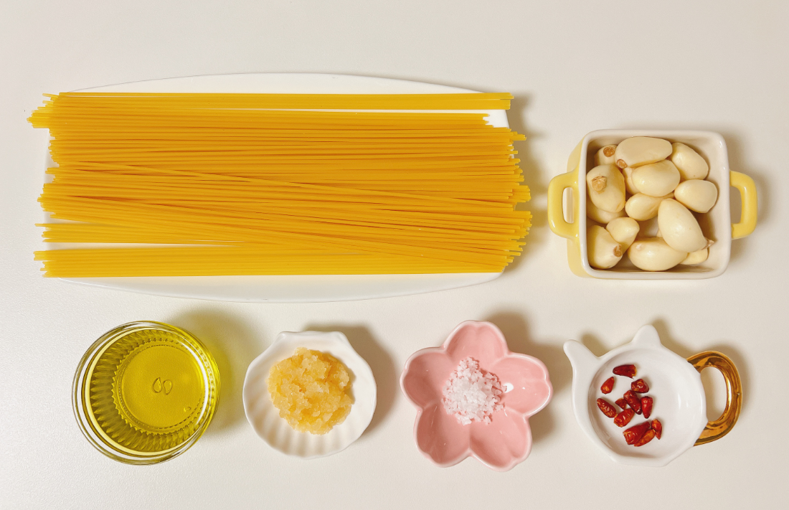

Recipe
알리오 올리오

알리오 올리오
파스타
마늘과 올리브오일만으로 완성하는 이탈리아 정통 파스타 — 냉장고가 텅 비어도 괜찮아요.
Ingredients
재료
주재료
스파게티 면
100g
마늘
4~5쪽
올리브오일 (엑스트라 버진)
4큰술
페페론치노 (건고추)
2~3개
파슬리 (선택)
약간
양념
소금
넉넉히 (면수용)
후추
약간
파마산 치즈 (선택)
취향껏

Directions
만드는 법
-
01
면 삶기 준비 — 냄비에 물을 넉넉히 끓이고, 끓어오르면 소금을 손으로 한 줌 넣어주세요. 3분 물이 짭조름하게 느껴질 정도여야 면에 간이 배어요. 면수는 나중에 꼭 한 컵 남겨두세요.
-
02
면 삶기 — 스파게티를 넣고 봉지에 적힌 시간보다 1분 짧게 삶아주세요. 7분 알덴테로 살짝 덜 익혀야 소스와 볶을 때 딱 맞게 익어요.
-
03
마늘 & 페페론치노 볶기 — 면을 삶는 동안, 팬에 올리브오일을 두르고 약불에서 편 썬 마늘과 페페론치노를 넣어 볶아주세요. 4분 마늘이 노릇하게 색이 들면 불을 끄거나 줄이세요. 타면 쓴맛이 나요.
-
04
면수 추가 & 유화 — 삶은 면을 건져서 팬에 넣고, 면수 3~4큰술을 부어 강불에서 30초간 빠르게 볶아주세요. 1분 면수의 전분이 오일과 섞여 부드러운 소스가 만들어져요. 면이 마르면 면수를 조금씩 더 추가하세요.
-
05
마무리 — 불을 끄고 후추를 넉넉히 갈아 넣은 뒤, 파슬리나 파마산 치즈를 올려 바로 드세요. 1분 미만 접시를 미리 따뜻하게 데워두면 더 맛있게 먹을 수 있어요.
Substitute
재료 대체
페페론치노 대신
청양고추 1개
대형마트에서도 페페론치노를 못 찾을 때. 칼칼함은 비슷해요.
엑스트라 버진 대신
일반 올리브오일
향이 조금 약하지만 충분히 맛있어요. 식용유는 비추.
스파게티 대신
링귀네 / 페투치네
납작한 면도 잘 어울려요. 삶는 시간만 조절하세요.
파슬리 대신
쪽파 or 바질
신선한 허브라면 뭐든 OK. 없어도 맛에 큰 지장 없어요.
파마산 치즈 대신
슬라이스 체다치즈
정통은 아니지만 고소함 보완용으로 올려도 괜찮아요.
생마늘 대신
다진 마늘 (튜브)
1쪽 = 약 1작은술. 단, 수분이 많아 튈 수 있으니 주의하세요.